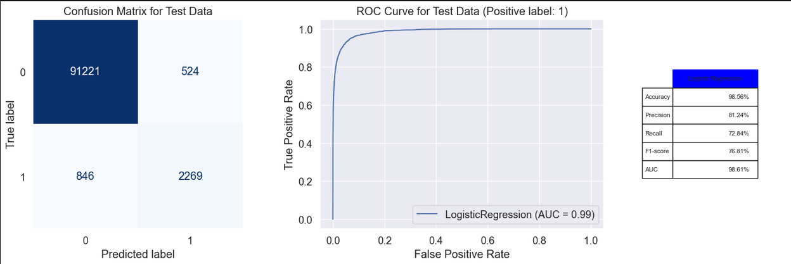

Project Overview
This project focuses on predicting the probability that a website visitor converts (makes a purchase) on an e-commerce platform. Using logistic regression and in-depth exploratory data analysis, the model identifies key factors that drive conversion, enabling businesses to better target their marketing efforts and optimize the user journey.
Problem Statement
E-commerce businesses lose significant revenue due to low conversion rates — most visitors browse but never buy. The challenge is to identify which user characteristics (age, pages visited, time on site, traffic source) most strongly predict purchase intent, and build a reliable binary classifier to score incoming users.
Methodology
- Exploratory Data Analysis: Analyzed distributions of age, pages visited, new/returning visitor status, and traffic source. Identified interaction effects (e.g., age × page category).
- Feature Engineering: Created interaction terms, encoded categorical variables, and normalized numerical features.
- Modelling: Trained a Logistic Regression classifier. Evaluated with confusion matrix, ROC-AUC, precision, and recall.
- Interpretation: Extracted model coefficients to rank feature importance and provide actionable business insights.
Key Findings
Age × Page interaction: Younger users visiting specific product categories convert at significantly higher rates — a key targeting insight for marketing segmentation.


Results
- Built a logistic regression model to score user conversion probability.
- Identified top predictors: pages visited, age group, and traffic source.
- Delivered clear, actionable recommendations for marketing segmentation.